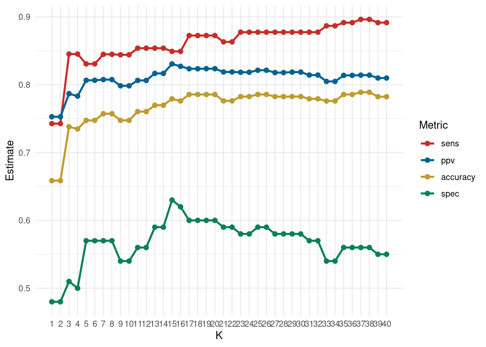

29 Class Activity 23
# load the necessary libraries
library(tidyverse)
library(tidymodels)
library(mlbench) # for PimaIndiansDiabetes2 dataset
library(janitor)
library(yardstick) # extra package for getting metrics
library(parsnip) # tidy interface to models
library(ggthemes)
library(forcats)
library(probably)
library(yardstick)29.1 Group Activity 1
Load the mlbench package to get PimaIndiansDiabetes2 dataset.
# Load the data - diabetes
data(PimaIndiansDiabetes2)
db <- PimaIndiansDiabetes2
db <- db %>% drop_na()
db_raw <- db %>% select(glucose, insulin, diabetes)
db_split <- initial_split(db_raw, prop = 0.80)
# Create training data
db_train <- db_split %>% training()
# Create testing data
db_test <- db_split %>% testing()
29.1.1 a. Creating the Recipe: Construct a recipe for the model by normalizing glucose and insulin predictors to predict diabetes status on the training set, ensuring data scales are comparable.
29.1.2 b. Model Specification: Define the KNN model using a flexible tune() placeholder for the number of neighbors, specifying a classification task.
Click for answer
Answer:
knn_spec <- nearest_neighbor(weight_func = "rectangular",
engine = "kknn",
mode = "classification",
neighbors = tune())29.1.3 c. Creating Folds: Divide the training data into 10 stratified folds based on the diabetes outcome to prepare for cross-validation, ensuring representation.
Click for answer
Answer:
db_vfold <- vfold_cv(db_train, v = 10, strata = diabetes)29.1.4 d. Cross-Validation Grid: Generate a sequence of K values to test with 10-fold cross-validation, evaluating model performance across a range of neighbors.
Click for answer
Answer:
knn_fit <- workflow() %>%
add_recipe(db_recipe) %>%
add_model(knn_spec) %>%
tune_grid(
resamples = db_vfold,
grid = k_vals,
metrics = metric_set(yardstick::ppv, yardstick::accuracy, sens, spec),
control = control_resamples(save_pred = TRUE))
cv_metrics <- collect_metrics(knn_fit)
cv_metrics %>% group_by(.metric) %>% slice_max(mean) # A tibble: 6 × 7
# Groups: .metric [4]
neighbors .metric .estimator mean n std_err .config
<dbl> <chr> <chr> <dbl> <int> <dbl> <chr>
1 37 accuracy binary 0.789 10 0.0122 Preproc…
2 38 accuracy binary 0.789 10 0.0122 Preproc…
3 15 ppv binary 0.831 10 0.0121 Preproc…
4 37 sens binary 0.896 10 0.0121 Preproc…
5 38 sens binary 0.896 10 0.0121 Preproc…
6 15 spec binary 0.63 10 0.03 Preproc…29.1.5 e. Visualization: Plot the cross-validation results to determine the optimal K value, comparing different performance metrics visually.
Click for answer
Answer:
final.results <- cv_metrics %>% mutate(.metric = as.factor(.metric)) %>%
select(neighbors, .metric, mean)
final.results %>%
ggplot(aes(x = neighbors, y = mean, color = forcats::fct_reorder2(.metric, neighbors, mean))) +
geom_line(size = 1) +
geom_point(size = 2) +
theme_minimal() +
scale_color_wsj() +
scale_x_continuous(breaks = k_vals[[1]]) +
theme(panel.grid.minor.x = element_blank())+
labs(color='Metric', y = "Estimate", x = "K")
29.2 Group Activity 2
29.2.1 a. Data Preparation and Train-Test Split
Load the mlbench package and tidymodels framework, select relevant features for predicting glucose, and split the data into training and test sets. For this activity, use mass and insulin as your features.
Click for answer
Answer:
library(mlbench)
library(tidymodels)
library(dplyr)
data(PimaIndiansDiabetes2)
db <- PimaIndiansDiabetes2 %>%
drop_na() %>%
select(glucose, mass, insulin)
# Splitting the data
set.seed(2056)
db_split <- initial_split(db, prop = 0.75, strata = glucose)
db_train <- training(db_split)
db_test <- testing(db_split)29.2.2 b. Model Specification
Define a linear regression model for predicting glucose as a function of mass and insulin.
29.2.3 c. Fit the Model
Fit the linear model to the training data, predicting glucose based on mass and insulin.